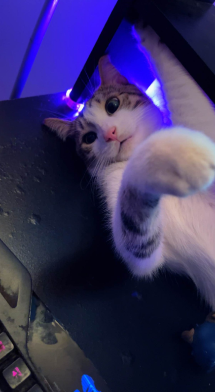

Multimedia Blog Post
All my favourite media content!
This video I find very visually aesthetic. Watching the astronaut float through space is so relaxing and exciting at the same time! The dark space with all the stars makes it feel like they're in a whole other world, far away from everything. Space intrigues me a lot and this particular media content really caught my eye!
Cosmo!
This is my cat Cosmo. I love him so much because he has been a true hero in my life. Through the ups and downs, Cosmo's presence has been a constant source of comfort and joy. His playful antics bring laughter and light into my days, and his gentle purring soothes me during tough times. Cosmo has an incredible ability to sense when I need a little extra love and always seems to know just how to lift my spirits. His loyalty and affection make every day brighter, and Im endlessly grateful for the companionship and warmth he brings into my life.
Daft Punk - Give Life Back To Music AUDIO
"Give Life Back to Music" by Daft Punk is a track that resonates deeply with me for several reasons. The songs infectious groove and upbeat rhythm have an almost magical ability to lift my spirits and energize my day. The blend of classic funk with modern electronic elements creates a sound thats both nostalgic and fresh, a testament to Daft Punks mastery in blending genres. The lyrics, though simple, capture a profound message about the power of music to rejuvenate and inspire. Every time I listen to it, Im reminded of the pure joy and freedom that music brings, making it impossible not to dance along and feel a renewed sense of excitement and vitality.
Red Lights
LOVEEE THIS TRACK AND WALLPAPER!!